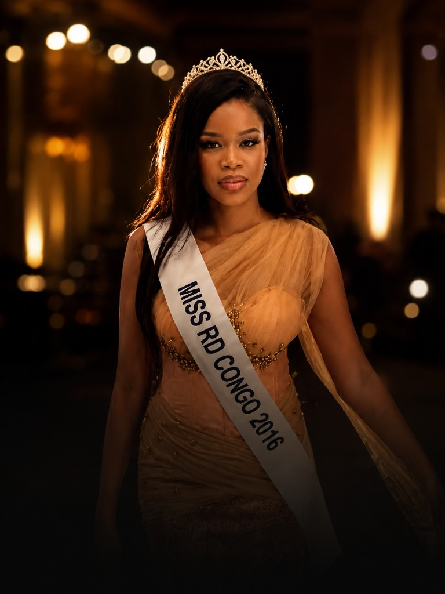
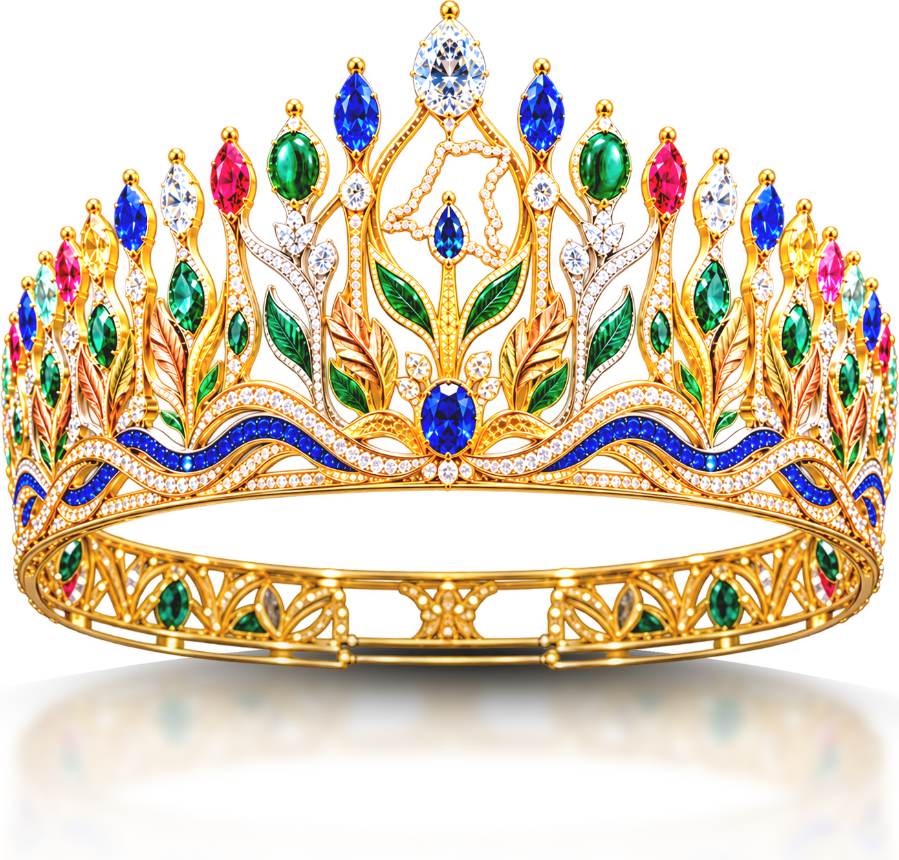
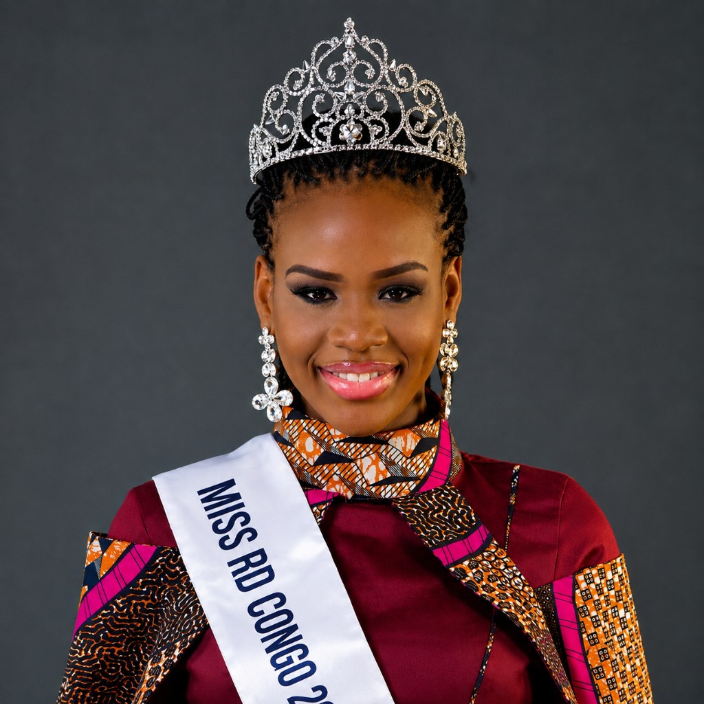
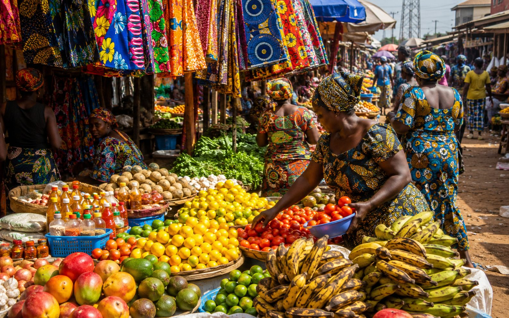
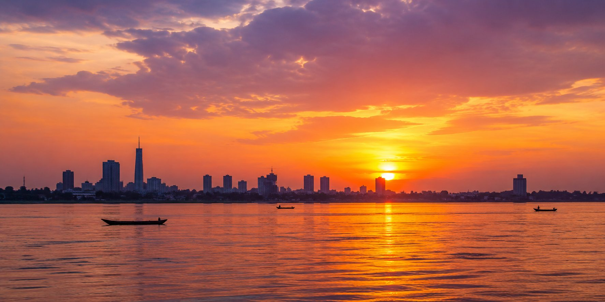
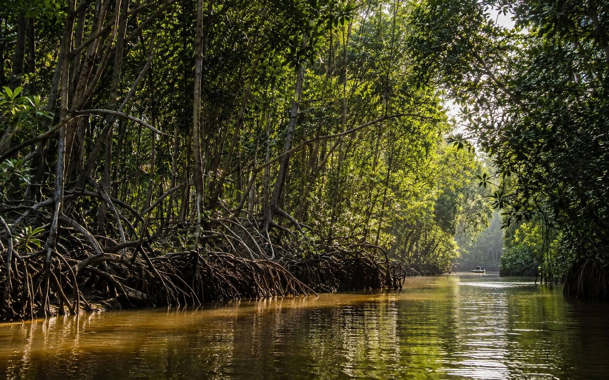
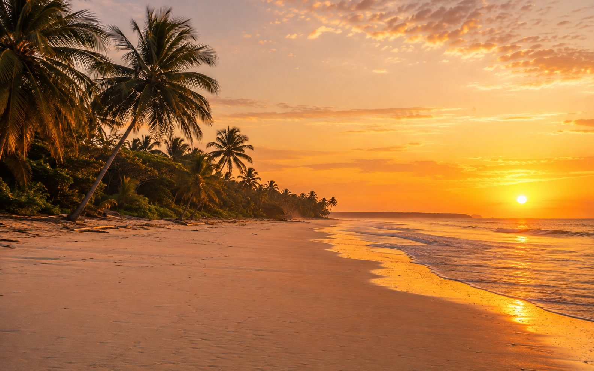
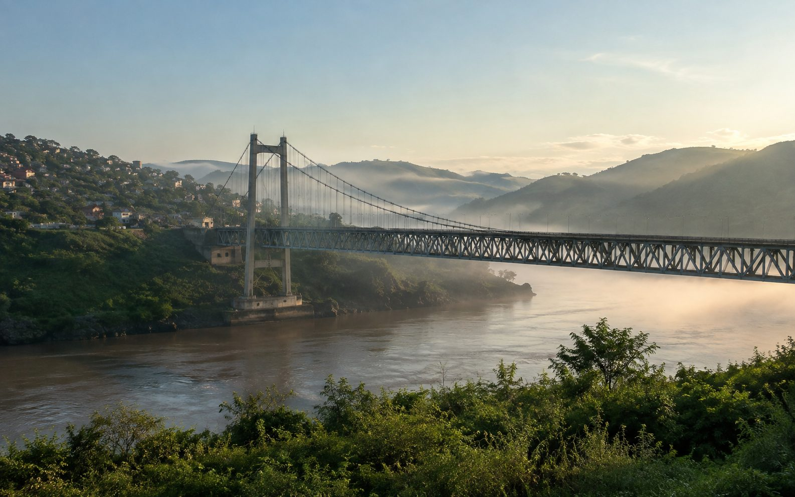

Beauté
Le gala, la couronne, la lumière.
Miss RDCÉdition 2026
Édition de la Renaissance — la beauté qui témoigne, le Congo qui rayonne.
Édition de la Renaissance
Depuis 2016, la couronne attend. L’édition 2026 reprend ce flambeau — non comme une simple répétition, mais comme une renaissance pensée pour la décennie qui s’ouvre.

MISS RDC 2026
La beauté qui témoigne, la couronne qui rassemble, le Congo qui rayonne.
L'univers Miss RDC
Élégance, scène et fierté nationale — le concours en images.

Depuis 1968
En septembre 2016, Andréa Moloto était élue Miss RDC. Depuis cette date, aucune autre édition nationale n’a été organisée : la couronne attend depuis dix ans.
MISS RDC 2026 rendra hommage à cette lignée — la transmission étant l’un des fils rouges de l’édition.
L'histoire du concoursLe spectacle
26 provinces, 400 terroirs, une seule couronne : célébration de l’unité dans la diversité.
Découvrir le programme
Coordination nationale
Coordonnatrice nationale, Miss RDC
Sous l'autorité du Ministère du Tourisme, elle porte la Coordination Nationale — former, révéler et préparer chaque jeune Congolaise à représenter le pays.
Transformer un potentiel brut en excellence reconnue, et faire de cette réussite individuelle un rayonnement collectif pour la RDC tout entière.
Miss RDC, c'est le spectacle, le voyage et la fierté nationale — pas un rapport, un rêve partagé.

Le gala, la couronne, la lumière.

Les couleurs, les terroirs, les provinces.

Le fleuve, la côte, le pays à découvrir.
Le pays
Du fleuve à l'Atlantique, des mangroves aux hauts plateaux — chaque étape du concours ouvre une fenêtre sur la beauté du pays.



Célébration de l’unité dans la diversité. Candidatures ouvertes dans tout le pays — contactez la Coordination Nationale.
Représenter ma provinceCandidatures ouvertes dans les 26 provinces. Contact : info@miss-rdc.cd